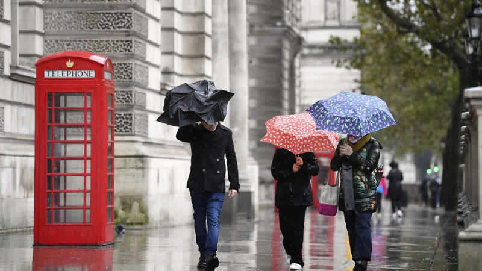
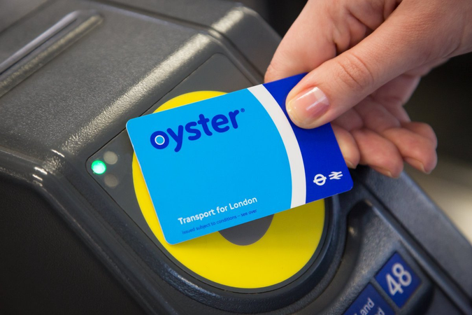

Yapabileceğiniz Etkinlikler
| Ücretsiz Etkinlikler | Ücretli Etkinlikler (£) |
|---|---|
| Big Ben | London Eye |
| Sky Garden Gezisi | Londra Kulesi ve Kraliyet Mücevherleri Sergisi |
| Piccadilly Circus | Tower Bridge Gezisi |
| Notting Hill | Thames Nehri Gezisi |
| Kensington Bahçeleri | Noel Işıkları Gece Otobüs Turu (Yılbaşı) |
Hava Durumu
| Günler | Durum | En Düşük | En Yüksek |
|---|---|---|---|
| 04.01.25 Cmt | Yağmurlu | -1° | 3° |
| 05.01.25 Paz | Yağmurlu | 1° | 13° |
| 06.01.25 Pzt | Yağmurlu | 1° | 11° |
| 07.01.25 Sal | Yağmurlu | 1° | 4° |
| 08.01.25 Çar | Güneşli | -1° | 3° |
| 09.01.25 Per | Parçalı Bulutlu | -2° | 3° |
| 10.01.25 Cum | Bulutlu | 2° | 6° |
Pratik Bilgiler
- Londra'da her an yağmur yağabilme ihtimali olduğu için mutlaka şemsiyenizi alın.
- Toplu taşıma kullanacaksanız kolay geçiş sağlamak için temassız olan kredi kartınızı yurt dışına açtırın.
- Kredi kartından daha ucuza toplu taşımayı kullanmak istiyorsanız oyster card alabilirsiniz.
- Sabah 7.00-9.00 ve akşam 17.00-19.00 arası toplu taşıma daha kalabalıktır. Bu nedenle gezilerinizi bu saatleri dikkate alarak ayarlayabilirsiniz.
- Gitmeden önce metro ağını anlamak ve varmak istediğiniz yere en kısa ulaşımı sağlamak için internet olmadığında da kullanabileceğiniz bir uygulama indirin.
- Gelmeden önce gezeceğiniz yerlerin planını yapın.
- Londra'da prizler üçlü olduğu için buraya gelmeden priz dönüştürücüsü almakta fayda var.
- Londra ve Türkiye arasında yazın 2 kışın 3 saat, saat farkı bulunmaktadır. Londara'ya ilk defa gidiyorsanız varacağınız saati saat farkına göre hesaplamanız sizin için daha iyi olacaktır.
- Buraya gelmeden önce yanınıza İngiltere'nin para birimi olan pound almayı unutmayın.
 